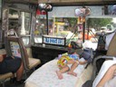
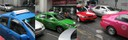
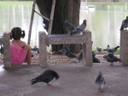
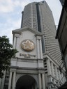
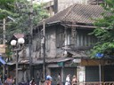
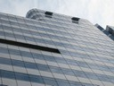
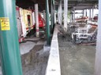

Resor · 2010-10-06 @ 18:00:05 Allmänt Permalink
6 okt på rundtur i BKK
Det här med att skriva ökar den mentala närvaron på mina utflykter. När jag nu ser något, går funderingarna till värdet, intresset och sen medvetandegörs detta i en formulering i huvudet, spännande. Jag gillar det men funderar på att låsa bloggen, så jag slipper ha det offentligt.
Sov gott och vaknade normal svensk tid vid 7, vilket är 12 här. Tomatjosfrukost på 7/11. Sen ett skutt på buss 15 från Khao San till Lumpini Park.
Buss 15. Mmm.. luktar som lastbilen vi hade på Harva för 30 år sedan. Diesel och damm, motorn sitter nära och är en del av miljön med sitt klassiska råa dieselljud. Ibland blandas det med andra bussar som stannar nära i trafiken och det blir en symfoni av gamla dieslar på tomgång.
Inredningen är av krom, bakelit och plåt, golvet av träplankor. En inredning som håller, i alla fall 50 år… nu är den …patinerad?
12 filer. Alla står stilla. Länge. Det tar tid. På kartan där jag försöker följa med är det svårt först, för det som är kvarter på kartan, vore nog mer lämpligt att kalla stadsdelar. Stora städer, lika stor turistkarta som hemma, annan skala!. Minns hur jag blev lurad av storleken på Londons tunnelbana, för den var ju lika stor som Stockholms… eller hur!? På kartan ja.
Reliken till miljöbov, har vid fönstret nära utgången en klisterlapp att företaget är ISO certifierat. Så mycket för det, att dokumentera är en sak, att minska utsläppen en annan. Det vore en fin bild att visa upp i fullmäktige när centern är stolta över sitt ”miljöarbete” med att certifiera kommunen ☺
Hoppar av vid ett rödljus nära Lumpini park, duggregn, sätter mig under ett tälttak och övar Thaifraser. Som ”Är allt inkluderat i det priset” och annat fiffigt.
Bra exempel på Marshall B Rosenbergs liknelse med pojken som matar änderna, vem är lyckligast, pojken eller fåglarna? I betydelsen att vi har ett inneboende behov att bidra till andras välbefinnande, det får oss att må bra. Flickan verkar oerhört närvarande och lycklig.
Går mot ”Sky Train”, ett tåg som går högt ovanför gatuplanet. Fräscht, 10 år gammalt bara, betongdesign. Men räls och peronger går oerhört nära bostäderna och elledningarna. Inom räckhåll ibland faktiskt!
Fotgängare måste hinna över 6 filer i taget, inga viloplatser som hemma inte. Så grön gubbe börjar nästan omedelbart att blinka för att bli röd igen. Jag försöker gå ”i skuggan” av lokalbefolkningen i förhoppningen att de vet vad de gör och har för avsikt att överleva dagen. Vilket tyvärr inte är så säkert i en fatalistisk kultur.
Trafikljusen har en stor digital timer med nedräkning i sekunder till omslag, det är ju smart!
Går ner mot floden och förstår att flodbåtar är smart, det ska jag ta hem sen, några hållplatser bara till Khao San.
Fukten går hårt åt byggnaderna, växter pressar sig in och sliter upp putsen. De har inte frost o kyla, men även här försöker naturen återställa, återerövra.
Passerar flodpolisens hamn, lite svår att urskilja från all annan bråte där nere men de har fina uniformer. Går vidare tills jag är riktigt vilse och ensam. En hund börjar skälla, jag ser inte men hör honom. Hoppas han inte är på samma sida alla väggar och prång som jag. Men se, det är han. Jag går sakta och tittar tillbaka, sidledes in i ett hus. Någon portgång. En man pekar vidare in i huset när jag säger ”Out”, Road” och ser hjälplös ut. Balanserar över några plankor, genom en trädgård och en grind. Så, bakgata igen när det skymmer. Och då är klockan 18! Mot State Tower igen, och mot baren på 64 våningen. Vad nu jag har där uppe att göra. Höjdskräck som en..som en Gnu? Nä, kan inte ge det epitetet till nåt annat än mig själv. ”Höjdrädd som Jocke Schmidt” borde det heta, det är illa det. Ska dit ändå, för som Ronja vill jag ju akta mig för höjder, MEN blir stoppad vid hissen och får mycket artigt veta att mina shorts och sandaler inte är del i den dresskod som Scirocco bar har. Nähe.
Då tar jag väl den där båten hem då da… Ah! Nej, de går ju inte i mörkret!
En trevlig och informativ kille på väg ut tycker att en Tuk Tuk nog är bäst sätt att komma hem, det kostar nog bara 100 THB. Jag håller med, och stadsturer är ju kul. Och se! Han råkar ju köra Tuk Tuk själv, kan man tänka. Hemåt går bra, med millimetermarginaler visserligen, och taket är lite lågt och jag vill se, så jag ligger på rygg och framstår förmodligen som nerdrogad ☺
Sov gott och vaknade normal svensk tid vid 7, vilket är 12 här. Tomatjosfrukost på 7/11. Sen ett skutt på buss 15 från Khao San till Lumpini Park.
Buss 15. Mmm.. luktar som lastbilen vi hade på Harva för 30 år sedan. Diesel och damm, motorn sitter nära och är en del av miljön med sitt klassiska råa dieselljud. Ibland blandas det med andra bussar som stannar nära i trafiken och det blir en symfoni av gamla dieslar på tomgång.
Inredningen är av krom, bakelit och plåt, golvet av träplankor. En inredning som håller, i alla fall 50 år… nu är den …patinerad?


På motorhuven, bredvid chauffören, ligger konduktörskans lilla son och sover. Dörrarna öppnas i farten och ibland stannas det knappt för på och avstigning, bara dörrarna som öppnas lite snabbt. Folk kliver av och på, ingen verkar betala. Att kliva ut mitt i trafiken mellan körbanorna är också ok.12 filer. Alla står stilla. Länge. Det tar tid. På kartan där jag försöker följa med är det svårt först, för det som är kvarter på kartan, vore nog mer lämpligt att kalla stadsdelar. Stora städer, lika stor turistkarta som hemma, annan skala!. Minns hur jag blev lurad av storleken på Londons tunnelbana, för den var ju lika stor som Stockholms… eller hur!? På kartan ja.


Taxibilarna har klara fina färger, blå, gröna, gula, röda, sirisa!Reliken till miljöbov, har vid fönstret nära utgången en klisterlapp att företaget är ISO certifierat. Så mycket för det, att dokumentera är en sak, att minska utsläppen en annan. Det vore en fin bild att visa upp i fullmäktige när centern är stolta över sitt ”miljöarbete” med att certifiera kommunen ☺
Hoppar av vid ett rödljus nära Lumpini park, duggregn, sätter mig under ett tälttak och övar Thaifraser. Som ”Är allt inkluderat i det priset” och annat fiffigt.


Ett barn matar duvor, de är en flock runt henne, hon matar lyckligt och får dem att hoppa, som hundar och ta brödet ur hennes hand. Hon pratar engelska, är nog där med en barnflicka. Som nickar när jag undrar om det är ok att ta en bild.Bra exempel på Marshall B Rosenbergs liknelse med pojken som matar änderna, vem är lyckligast, pojken eller fåglarna? I betydelsen att vi har ett inneboende behov att bidra till andras välbefinnande, det får oss att må bra. Flickan verkar oerhört närvarande och lycklig.
Går mot ”Sky Train”, ett tåg som går högt ovanför gatuplanet. Fräscht, 10 år gammalt bara, betongdesign. Men räls och peronger går oerhört nära bostäderna och elledningarna. Inom räckhåll ibland faktiskt!
Fotgängare måste hinna över 6 filer i taget, inga viloplatser som hemma inte. Så grön gubbe börjar nästan omedelbart att blinka för att bli röd igen. Jag försöker gå ”i skuggan” av lokalbefolkningen i förhoppningen att de vet vad de gör och har för avsikt att överleva dagen. Vilket tyvärr inte är så säkert i en fatalistisk kultur.
Trafikljusen har en stor digital timer med nedräkning i sekunder till omslag, det är ju smart!


Ok, ”Surasat Station”, jag spegelvänder världen och letar en timme på fel sida om stationen efter ”State Tower”, där Scirocco bar finns på 64 våningen. Förmodligen märkte inte världen att den var spegelvänd men ingen visste hur som helst var tornet låg. Tornet, bestämd form singular hade jag räknat med. Men det var många just där. Vänder kartan rätt, hittar en tyska som faktiskt bodde där! Så, på helt fel plats utifrån var olika personer satt ett kryss på min karta, hittade jag, kl.16.30, Tornet! ☺Fint värre i entrén, nån infodisk en bit in i komplexet är ledsen ”Men de öppnar baren först klockan 18”. Attans. Promenad o lunch istället., När det inte duggar så droppar det från alla luftkonditioneringar. Jag tänker att, sånt här är nyttigt, att få känna på de lägre nivåerna i Maslows pyramid. Inte, ”Tusan att båten inte går 5 knop till”, utan ”En fräsch toa vore underbart”.
Små hus, plottriga som nåt ur Pettsson, bredvid skyskrapor med glasfasader, dessa två bilder är samma korsning!
Små hus, plottriga som nåt ur Pettsson, bredvid skyskrapor med glasfasader, dessa två bilder är samma korsning!




Går ner mot floden och förstår att flodbåtar är smart, det ska jag ta hem sen, några hållplatser bara till Khao San.


Floden är högre än gatuplanet så det läcker vatten genom betongvallen ut på gatorna. Jag går…in i mörkret, genom rännilar av flodvatten, mellan hus och prång.Fukten går hårt åt byggnaderna, växter pressar sig in och sliter upp putsen. De har inte frost o kyla, men även här försöker naturen återställa, återerövra.
Passerar flodpolisens hamn, lite svår att urskilja från all annan bråte där nere men de har fina uniformer. Går vidare tills jag är riktigt vilse och ensam. En hund börjar skälla, jag ser inte men hör honom. Hoppas han inte är på samma sida alla väggar och prång som jag. Men se, det är han. Jag går sakta och tittar tillbaka, sidledes in i ett hus. Någon portgång. En man pekar vidare in i huset när jag säger ”Out”, Road” och ser hjälplös ut. Balanserar över några plankor, genom en trädgård och en grind. Så, bakgata igen när det skymmer. Och då är klockan 18! Mot State Tower igen, och mot baren på 64 våningen. Vad nu jag har där uppe att göra. Höjdskräck som en..som en Gnu? Nä, kan inte ge det epitetet till nåt annat än mig själv. ”Höjdrädd som Jocke Schmidt” borde det heta, det är illa det. Ska dit ändå, för som Ronja vill jag ju akta mig för höjder, MEN blir stoppad vid hissen och får mycket artigt veta att mina shorts och sandaler inte är del i den dresskod som Scirocco bar har. Nähe.
Då tar jag väl den där båten hem då da… Ah! Nej, de går ju inte i mörkret!
En trevlig och informativ kille på väg ut tycker att en Tuk Tuk nog är bäst sätt att komma hem, det kostar nog bara 100 THB. Jag håller med, och stadsturer är ju kul. Och se! Han råkar ju köra Tuk Tuk själv, kan man tänka. Hemåt går bra, med millimetermarginaler visserligen, och taket är lite lågt och jag vill se, så jag ligger på rygg och framstår förmodligen som nerdrogad ☺